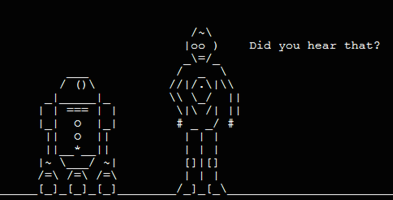

It is an electronic device, composed of any digital circuits
Stores and processes data according to instructions given to it by a program stored in memory
Alan Turing
Father of Computer Science, Mathematician, Logician, Wartime Codebreaker, Victim of Prejudice
The basic principle of the modern computer - the idea of controlling the machine's operations by
means of a program of coded instructions stored in the computer memory — was conceived by Alan
Turing
The Universal Computing Machine
Turing's Colossus was a general purpose electromechanical computer used in the World War II effort
Electromechanical Computers
In the earliest computers, switches were opened and closed by magnetic fields produced by relays
The IBM ASCC was a general purpose electromechanical computer used in the World War II effort and
built by a team representing Harvard, the U.S. Navy and IBM
Instructions and Data were provided via two separate punched paper tapes
One of the first programs to run on the Mark I was initiated on 29 March 1944 by
John von Neumann
Modern Computers
How does the modern computer work?
The Von Neumann architecture
All computers based on the same basic design
Flexibility to execute different types of programs like the Turing machine
Program and Data both stored in the same memory
The Von Neumann architecture
Stored-Program computer system
Memory holds both the program data and the instructions processing it
Control Unit manages moving data and program instructions into and out of memory
Control Unit executes program instructions sequentially
ALU is responsible for calculation tasks on the data
Input/Output makes program interactive
All these units are linked to each other via a computer bus
What is a computer bus?
Computer Bus
A bus, in computing, is a set of physical connections (cables, printed circuits, etc.) which can be shared
by multiple hardware components in order to communicate with one another
Each wire in a computer bus will carry a
single bit of information
Memory Subsystem
Flip-Flops
In digital electronics, a flip-flop or latch is a circuit that has two stable states and can be used
to store one bit of information
{ Board Exercise }
Draw the truth table for an SR Flip-Flop
Memory Organisation
Main Memory is organised as a matrix of bits, where each row represents a memory location and
is capable of storing a number of a specific width, typically multi-byte in length (8, 16, 32 or
64 bits)
Assume that data within memory can only be read or written a single row (memory location) at a time
Memory Architecture
Address Bus - carries the address of a memory cell
Data Bus - used to transfer data to and from a memory cell
Control Bus - selects read or write operations between memory and cpu or I/O devices
Random Access Memory
Many memory cells of fixed size
Each cell has an address associated with it
The time it takes to fetch/store is the same for all cells
Contents are lost if power fails
Read Only Memory
Contents written during production
Supports read operations only
Contents are NOT lost if power fails
Later evolved into PROMs, EPROMs and EEPROMs
Memory stores numbers, but what about letters?
Data in our programs can consist of both
Numbers and
Characters
But how can a computer represent Characters?
Using a character encoding scheme

ASCII
American Standard Code for Information Interchange
Most common character-encoding scheme on the Web until 2008
Surpassed by UTF-8, which includes ASCII as a subset
Based on the English alphabet, uses 7 bits and is capable of encoding:
numbers 0 to 9
lowercase letters a to z
uppercase letters A to Z
basic punctuation symbols
control codes that were originated with Teletype machines
{ Exercise }
Consult ASCII Man Page
The Memory Subsystem
Storing Data in Memory
What about more complex things?
Anything can be represented in memory using numbers, we just need some structure and/or encoding
mechanism
.gif | .mp3 | .wav | .avi | .psd | .jpeg
The Central Processing Unit
Executes a program of instruction cycles
Each instruction cycle has a number of steps
Fetch an instruction from memory
Decode it, determine what has to be done
Execute the instruction
Go back to step 1
ALU
4 bit Cascadable ALU with 16 different
Operations, implemented using 75 Logic Gates.
CPU Registers
Used to store and transfer data and instructions, they are the fastest type of memory available.
Some registers are general purpose, others have specific functions.
The accumulator register, for example, is located inside the ALU and used during arithmetical &
logical operations
Machine Code and Assembly
Machine code or machine language is a set of instructions
executed directly by a computer's CPU. Each instruction performs a very specific task, such as
a load, a jump, or an ALU operation on a unit of data in a CPU register or memory.
Because strings of 0s and 1s are so hard for people to read, assembly languages were invented. An assembly
language is essentially a human readable
direct translation of machine language.
Program Execution
Data flows inside the CPU using an internal bus
IR holds the next instruction to be decoded and executed
PC holds the address of the next instruction to be fetched
{ Board Exercise }
Simulate the machine code execution in the Von Neumann architecture
I/O
There are different types of I/O
Input Devices
Keyboard
Mouse
Microphone
Output Devices
Monitor
Printer
Speakers
Secondary Memory
Hard Drive
Floppy Disk Drive
CD/DVD
Terminal Evolution
teletype
old terminal
modern terminal
Storage Memory
Also called
Secondary memory, can be Removable or Persistent
Much slower than RAM/ROM
Much bigger than RAM/ROM
Much cheaper than RAM/ROM
Used by the OS through filesystems
Can be used by the OS as virtual memory
Hard Disk Structure
MBR is used in the computer boot process
Drives can be split into logical volumes called partitions
Sectors for a disk partition are marked during low level formatting
An empty file system is installed on a disk partition during the high level formatting
Computer Boot Sequence
Power On
The PC is set to an address 16 bytes below the processor’s uppermost physical address. Eg: 0xFFFF0 for
a 1M of address space
ROM containing the software initialization code must be located at this address
Basic Input/Output System
BIOS is a Boot Firmware built into PCs and the first software to be run at power on
Performs hardware initialization (POST) and loads a Bootloader from a mass memory device
Unified Extensible Firmware Interface (UEFI) was designed as a successor to BIOS, aiming to address its
technical shortcomings. New PC hardware predominantly ships with UEFI firmware


 Turing's Colossus was a general purpose electromechanical computer used in the World War II effort
Turing's Colossus was a general purpose electromechanical computer used in the World War II effort


 Assume that data within memory can only be read or written a single row (memory location) at a time
Assume that data within memory can only be read or written a single row (memory location) at a time


 Because strings of 0s and 1s are so hard for people to read, assembly languages were invented. An assembly
language is essentially a human readable
direct translation of machine language.
Because strings of 0s and 1s are so hard for people to read, assembly languages were invented. An assembly
language is essentially a human readable
direct translation of machine language.